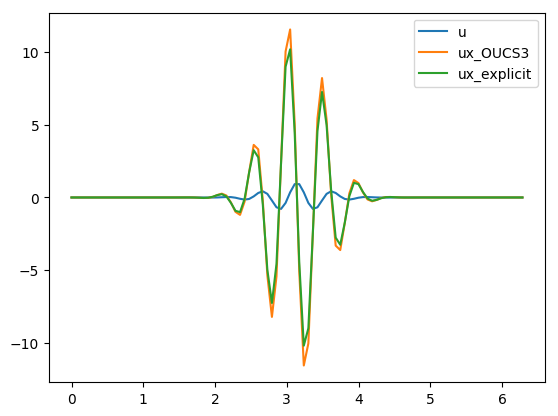
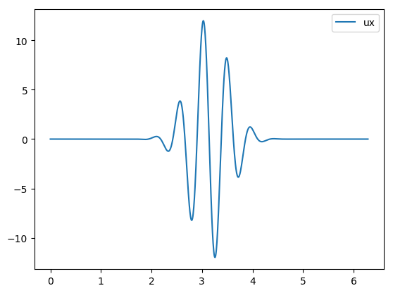

Lightweight classes for scientific computing using “cached_property”
In the quest for optimization and fast computation, while using
object-oriented programming, it is a typical technique to initialize the
linear algebra array operators as class attributes. Especially in
fluidfft we encounter pseudospectral operator classes that look
like:
import numpy as np from fluiddyn.util import mpi class Operator: def __init__(self, *params): ... [self.KY, self.KX] = np.meshgrid(self.ky_loc, self.kx_loc) self.KX2 = self.KX ** 2 self.KY2 = self.KY ** 2 self.K2 = self.KX2 + self.KY2 self.K4 = self.K2 ** 2 self.K8 = self.K4 ** 2 self.K = np.sqrt(self.K2) self.K_not0 = self.K.copy() self.K2_not0 = self.K2.copy() self.K4_not0 = self.K4.copy() if mpi.rank == 0 or self.is_sequential: self.K_not0[0, 0] = 10.0e-10 self.K2_not0[0, 0] = 10.0e-10 self.K4_not0[0, 0] = 10.0e-10 ...
As you can see, for the purpose of fast computation, we store modified versions of the wavenumber arrays that are used repeatedly later on, during simulation. These arrays may not be required while instantiating the same class for post-processing, and could result in unnecessary delays while loading large simulations.
For demonstrating using a simple example, we can create a class which automatically stores the operator arrays to compute the derivatives using finite difference schemes. Specifically we consider a compact finite difference scheme, named OUCS3 (Sengupta, T.K., Sircar, S.K. & Dipankar, A., J Sci Comput (2006) 26: 151).
Short primer on explicit and compact finite difference schemes
Differentiation using explicit finite difference scheme can be represented as:
Where u is a known 1-D vector and u’ is the desired first derivative of u. For second-order central difference (CD2), the “matrix” A takes the form of a tri-diagonal matrix with repeating elements like:
Such schemes do not require an array representation and can be substituted with for-loops is compiled languages such as C, Fortran etc. To implement this particular case in Python, they have to be either:
- represented using sparse matrices to allow for fast dot product, matrix multiplications etc.
- implemented using compiled functions (Pythran, Cython, Numba etc.) to allow for fast looping over arrays
However irrespective of the programming languages, when we begin to use higher order schemes such as compact finite difference schemes:
we end up initializing arrays. Here A and B can be sparse matrices, typically pentadiagonal and tridiagonal respectively. The resultant operator, C = B − 1 A is quite dense, and thus in practice it is easier to compute the derivative in two steps:
- Matrix multiplication A{u} → {d}
- Solve B{u’} = {d} iteratively, using TDMA
Note: Boundary conditions (BC) would mean the matrices would be
slightly different, but we avoid this consideration in this post,
since scipy does not seem to have special solvers for such
matrices. Ideally one would use a Thomas Diagonal Matrix Algorithm /
TDMA specially designed for problems with periodic BC.
Demo
We will be reusing the following Base class to store the input
parameters for OUCS3
%matplotlib inline import numpy as np from scipy.sparse import diags from scipy.sparse.linalg import inv import seaborn as sns class Base: def __init__(self, L, N, alpha=0.0): """Gather input parameters for OUCS3 Parameters ---------- L: float length of the domain N: int number of points alpha: float upwind factor, adds numerical dissipation """ # Scalar parameters self.L = L self.N = N delta = L / (N - 1) a0 = -11 * alpha / 150 a1 = 1.57557379 / 2.0 + alpha / 30.0 a2 = 0.183205192 / 4.0 + alpha / 300.0 b0 = 1.0 b1 = 0.3793894912 + alpha / 60.0 # Create pentadiagonal matrix, A self.A = diags( np.array([-a2, -a1, a0, a1, a2]) / delta, [-2, -1, 0, 1, 2,], shape=(N, N), format="csc" ) # Create tridiagonal matrix, B self.B = diags( [b1, b0, b1], [-1, 0, 1], shape=(N, N), format="csc" ) def diff(self, u): Au = self.A @ u # inefficient alternative return inv(self.B) @ Au def plot(self, **fields): fields.update({"x": np.linspace(0, self.L, self.N)}) for field in fields: if field != "x": sns.lineplot("x", field, data=fields, label=field)
Have a look at how the arrays look like
o = Base(4 * np.pi, 6) print("\nA = \n", o.A.toarray()) print("\nB = \n", o.B.toarray())
A = [[ 0. 0.31345045 0.01822376 0. 0. 0. ] [-0.31345045 0. 0.31345045 0.01822376 0. 0. ] [-0.01822376 -0.31345045 0. 0.31345045 0.01822376 0. ] [ 0. -0.01822376 -0.31345045 0. 0.31345045 0.01822376] [ 0. 0. -0.01822376 -0.31345045 0. 0.31345045] [ 0. 0. 0. -0.01822376 -0.31345045 0. ]] B = [[1. 0.37938949 0. 0. 0. 0. ] [0.37938949 1. 0.37938949 0. 0. 0. ] [0. 0.37938949 1. 0.37938949 0. 0. ] [0. 0. 0.37938949 1. 0.37938949 0. ] [0. 0. 0. 0.37938949 1. 0.37938949] [0. 0. 0. 0. 0.37938949 1. ]]
We can inherit the class to use an efficient algorithm to solve such
arrays, such as scipy.linalg.solve_toeplitz which does not accept
sparse arrays as inputs.
from scipy.linalg import solve_toeplitz class OUCS3(Base): """A class to perform OUCS3 compact scheme finite differentiation.""" def diff(self, u): Au = self.A @ u B_column = self.B[:,0].toarray() B_row = self.B[0,:].toarray() return solve_toeplitz((B_column, B_row), Au)
Test that everything works
Let’s compare derivatives of a gaussian pulse computed using OUCS3 and explicit finite difference schemes.
from scipy.signal import gausspulse def init_params_fields(N): """Initialize parameters and generate a gaussian pulse.""" L = 2 * np.pi x = np.linspace(0, L, N) u = gausspulse(abs(x - L/2), fc=2) return L, N, x, u L, N, x, u = init_params_fields(100) oper = OUCS3(L, N) ux = oper.diff(u) oper.plot(u=u, ux_OUCS3=ux, ux_explicit=np.gradient(u, x))
Cost of instantiation and computing derivatives
Let us have a look at the time consumed in instantiating the class. We will use
- N = 1000 (typical array size for a well resolved 1D simulation)
We might extend what we observe here to 2D (N = 10002) and 3D
simulations (N = 1003 to N = 10003). We shall use the
package line_profiler to time the time elapsed in each line. The
system has been tuned using perf package to reduce jitter.
%load_ext line_profiler def profile_OUCS3(N): L, N, x, u = init_params_fields(N) oper = OUCS3(L, N) # instantiate ux = oper.diff(u) # compute derivative %lprun -f profile_OUCS3 -f OUCS3.diff profile_OUCS3(1_000)
Timer unit: 1e-06 s
Total time: 0.01216 s
File: <ipython-input-3-12c24f274ae1>
Function: diff at line 5
Line # Hits Time Per Hit % Time Line Contents
==============================================================
5 def diff(self, u):
6 1 87.0 87.0 0.7 Au = self.A @ u
7 1 1579.0 1579.0 13.0 B_column = self.B[:,0].toarray()
8 1 1648.0 1648.0 13.6 B_row = self.B[0,:].toarray()
9 1 8846.0 8846.0 72.7 return solve_toeplitz((B_column, B_row), Au)
Total time: 0.015373 s
File: <ipython-input-5-3ad1c1c5fdb7>
Function: profile_OUCS3 at line 3
Line # Hits Time Per Hit % Time Line Contents
==============================================================
3 def profile_OUCS3(N):
4 1 342.0 342.0 2.2 L, N, x, u = init_params_fields(N)
5 1 2846.0 2846.0 18.5 oper = OUCS3(L, N) # instantiate
6 1 12185.0 12185.0 79.3 ux = oper.diff(u) # compute derivative
The instantiation just takes over a millisecond and secondary arrays
B_column and B_row takes around a millisecond each, taking a
combined time of around 20% of the method diff. Even at
this scale, we see it can be benificial to store B_column and
B_array as attributes.
HOWTO: create a lightweight class with cached attributes
Let us begin by inheriting the Base class wherein the diff
method uses stored values for B_column and B_row.
from scipy.linalg import solve_toeplitz class BaseCached(Base): def diff(self, u): Au = self.A @ u B_column = self._B_column B_row = self._B_row return solve_toeplitz((B_column, B_row), Au)
First run
If we are not going to rely on a third-party packages, we can do the
following now (with Python 3) with functools.lru_cache
(docs).
from functools import lru_cache class OUCS3Native(BaseCached): """A native implementation of a ``cached_property``.""" @property @lru_cache(maxsize=2) def _B_column(self): return self.B[:,0].toarray() @property @lru_cache(maxsize=2) def _B_row(self): return self.B[0,:].toarray() L, N, x, u = init_params_fields(1_000) oper_native = OUCS3Native(L, N) %lprun -f OUCS3Native.diff oper_native.diff(u)
Timer unit: 1e-06 s
Total time: 0.011203 s
File: <ipython-input-6-b2308b39973e>
Function: diff at line 4
Line # Hits Time Per Hit % Time Line Contents
==============================================================
4 def diff(self, u):
5 1 155.0 155.0 1.4 Au = self.A @ u
6 1 1783.0 1783.0 15.9 B_column = self._B_column
7 1 1649.0 1649.0 14.7 B_row = self._B_row
8 1 7616.0 7616.0 68.0 return solve_toeplitz((B_column, B_row), Au)
Second run
%lprun -f OUCS3Native.diff oper_native.diff(u)
Timer unit: 1e-06 s
Total time: 0.006538 s
File: <ipython-input-6-b2308b39973e>
Function: diff at line 4
Line # Hits Time Per Hit % Time Line Contents
==============================================================
4 def diff(self, u):
5 1 139.0 139.0 2.1 Au = self.A @ u
6 1 3.0 3.0 0.0 B_column = self._B_column
7 1 1.0 1.0 0.0 B_row = self._B_row
8 1 6395.0 6395.0 97.8 return solve_toeplitz((B_column, B_row), Au)
It is super quick to access _B_column and _B_row in the second
run and takes simply microseconds!
How does it work
The least recently used cache (LRU) optimizes the function call, caches the return value, and returns the cache for future calls if the function parameters were “unchanged”.
Such an implementation would be protected from simple initialization attempts such as:
oper_native._B_column = 0
--------------------------------------------------------------------------- AttributeError Traceback (most recent call last) <ipython-input-11-6219892dab4c> in <module> ----> 1 oper_native._B_column = 0 AttributeError: can't set attribute
However it is unsafe and can lead to the following unpredictable behaviours:
- Overwriting the original array after first run does not modify the result:
oper_native.B = np.zeros((N,N)) ux = oper_native.diff(u) oper_native.plot(ux=ux)
- No error is raised when modifying the array in place
oper_native._B_column[:] = 0
- If
lru_cache(maxsize=None)is used it would lead to a potential memory leak.
Do it better
Other third-party implementations
These would cache the “property” inside __dict__ and not in some
random location in a memory.
Werkzeug
from werkzeug.utils import cached_property as wcached_property class OUCS3Werkzeug(BaseCached): """Werkzeug implementation of a ``cached_property``. """ @wcached_property def _B_column(self): return self.B[:,0].toarray() @wcached_property def _B_row(self): return self.B[0,:].toarray()
First run
L, N, x, u = init_params_fields(1_000) oper_wz = OUCS3Werkzeug(L, N) %lprun -f OUCS3Werkzeug.diff oper_wz.diff(u)
Timer unit: 1e-06 s
Total time: 0.009176 s
File: <ipython-input-6-b2308b39973e>
Function: diff at line 4
Line # Hits Time Per Hit % Time Line Contents
==============================================================
4 def diff(self, u):
5 1 124.0 124.0 1.4 Au = self.A @ u
6 1 914.0 914.0 10.0 B_column = self._B_column
7 1 887.0 887.0 9.7 B_row = self._B_row
8 1 7251.0 7251.0 79.0 return solve_toeplitz((B_column, B_row), Au)
Second run
%lprun -f OUCS3Werkzeug.diff oper_wz.diff(u)
Timer unit: 1e-06 s
Total time: 0.010082 s
File: <ipython-input-6-b2308b39973e>
Function: diff at line 4
Line # Hits Time Per Hit % Time Line Contents
==============================================================
4 def diff(self, u):
5 1 508.0 508.0 5.0 Au = self.A @ u
6 1 11.0 11.0 0.1 B_column = self._B_column
7 1 4.0 4.0 0.0 B_row = self._B_row
8 1 9559.0 9559.0 94.8 return solve_toeplitz((B_column, B_row), Au)
cached_property
from cached_property import cached_property as ccached_property class OUCS3CachedProperty(BaseCached): """Werkzeug implementation of a ``cached_property``. """ @ccached_property def _B_column(self): return self.B[:,0].toarray() @ccached_property def _B_row(self): return self.B[0,:].toarray()
First run
L, N, x, u = init_params_fields(1_000) oper_cp = OUCS3CachedProperty(L, N) %lprun -f OUCS3CachedProperty.diff oper_cp.diff(u)
Timer unit: 1e-06 s
Total time: 0.010591 s
File: <ipython-input-6-b2308b39973e>
Function: diff at line 4
Line # Hits Time Per Hit % Time Line Contents
==============================================================
4 def diff(self, u):
5 1 149.0 149.0 1.4 Au = self.A @ u
6 1 1105.0 1105.0 10.4 B_column = self._B_column
7 1 1935.0 1935.0 18.3 B_row = self._B_row
8 1 7402.0 7402.0 69.9 return solve_toeplitz((B_column, B_row), Au)
Second run
%lprun -f OUCS3CachedProperty.diff oper_cp.diff(u)
Timer unit: 1e-06 s
Total time: 0.006916 s
File: <ipython-input-6-b2308b39973e>
Function: diff at line 4
Line # Hits Time Per Hit % Time Line Contents
==============================================================
4 def diff(self, u):
5 1 141.0 141.0 2.0 Au = self.A @ u
6 1 3.0 3.0 0.0 B_column = self._B_column
7 1 1.0 1.0 0.0 B_row = self._B_row
8 1 6771.0 6771.0 97.9 return solve_toeplitz((B_column, B_row), Au)
Differences from the native implementation
Overwriting cached property is OK as follows
oper_wz._B_column = 0 oper_cp._B_column = 0
An advantage of such implementation is there is no need to add a
maxsize parameter, and thus no risk of having a memory leak.
The rest of the “caveats” mentioned before still persist in the
third-party implementation. I am not sure if it would be possible to
raise an AttributeError when attempts are made to alter cached
property. But this depends on the application, so the caveat can be a
feature.
When Python 3.8 becomes available we would have access to a native implementation and we would be able to do:
from functools import cached_property class OUCS3(BaseCached): """A class to perform OUCS3 compact scheme finite differentiation. A Python 3.8 implementation of a ``cached_property``. """ @cached_property def _B_column(self): return self.B[:,0].toarray() @cached_property def _B_row(self): return self.B[0,:].toarray()
Exciting times ahead.
This post was written entirely in the Jupyter notebook. You can download this notebook, or see a static view on nbviewer.
UPDATE: We have begun to use cached_property in
FluidSHT.

About the author
Ashwin Vishnu Mohanan, Ph.D. in Fluid mechanics